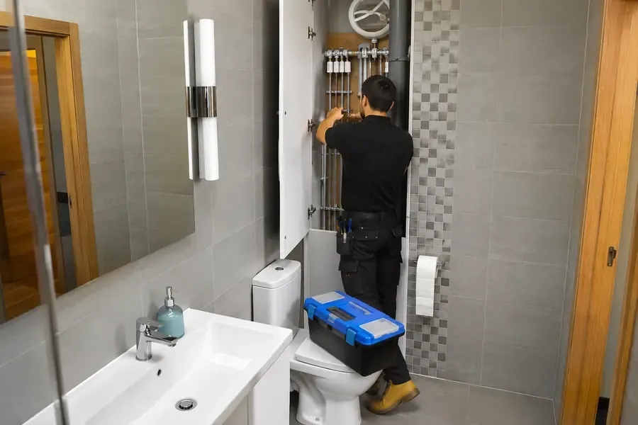

Lekkage? We vinden het lek en maken het dicht.
Een natte plek, druppels of water op de vloer. We zoeken de oorzaak en repareren het zo dat het niet terugkomt.
- 24/7bereikbaar
- Prijsvooraf bekend
- Ervarenloodgieters
Herkent u dit?
Dit zijn de meest voorkomende signalen.
- Een natte of bruine plek op het plafond
- Een hogere waterrekening zonder reden
- U hoort water lopen terwijl alles dicht is
- Schimmel of een muffe lucht in de badkamer
- De druk van de cv-ketel zakt steeds
Wat we doen
Eerst zoeken we waar het lek zit. Dat is vaak niet de plek waar u het water ziet: water loopt langs leidingen en balken en komt ergens anders naar buiten.
Lek zoeken zonder onnodig breekwerk
Met een vochtmeter, warmtecamera of druktest vinden we het lek. We maken alleen open waar het nodig is.
Repareren en testen
We vervangen de kapotte leiding, koppeling of kitnaad en testen daarna of alles droog blijft.
Wat kost het?
U hoort de prijs altijd voordat we beginnen.
- Voorrijkosten
- € ..
- Uurtarief
- € ..
- Toeslag avond, nacht en weekend
- € ..
Alle bedragen incl. btw. De echte tarieven vullen we in met Ravenberg.
Lekkage in uw plaats

Veelgestelde vragen
Wat doe ik als eerste bij een lekkage?
Draai de hoofdkraan dicht. Komt er water bij stopcontacten of lampen, zet dan die groep in de meterkast uit. Zet een emmer neer en maak foto’s voor de verzekering.
Moet de muur altijd open?
Nee. We zoeken eerst met meetapparatuur en maken alleen open waar het lek zit.
Hoe lang duurt de reparatie?
Een kleine reparatie is vaak binnen een uur klaar. Bij een verborgen lek kan het langer duren. Dat hoort u vooraf.